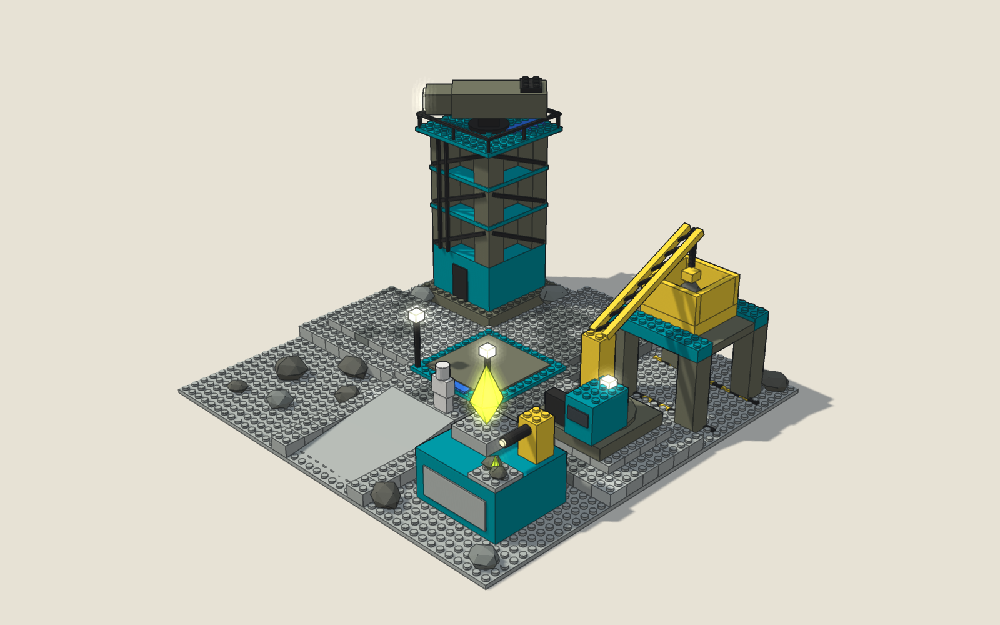

Production Design Target
композиція · робочий стан
Проєктна ілюстрація композиції, не фото LEGO. Розміщення модулів і адаптації — пропозиція на рішення. Точний вигляд кожного модуля береться з офіційної інструкції 4990. Біла фігура ≈ 2 м показує масштаб і не є частиною будівлі.